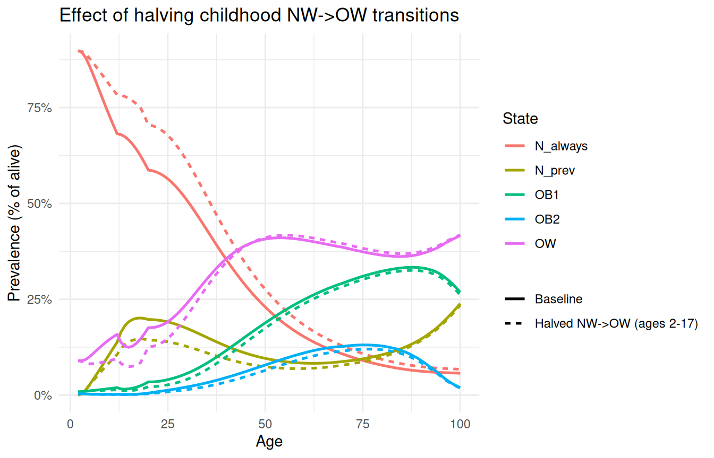

moon_check_params(params, strict = FALSE)Customizing MOON
Bring your own inputs: deterministic edits, full data swaps, custom PSA specs
2026-06-25
Source:vignettes/moon-customizing.qmd
What this vignette covers
How to customize the MOON model: tweak any field of the params list, swap in your own data files, or build PSA specs from scratch. It assumes you’ve read the “Getting started with MOON” vignette and are comfortable with the canonical moon_params_norway() → moon_check_params() → moon_deterministic() workflow.
1. The mental model
moon_params_norway() returns a plain R list. Every slot is yours to mutate before passing to moon_deterministic() (or moon_sample_params() / moon_psa() on the spec’d path). There are three escalating levels of intervention:
-
tp_overrides=at the call site. One-shot scenarios on top of an unchangedparams(covered in the getting-started vignette §10). -
In-place mutation of fields on
params. New “baseline” for every downstream call. Most of this vignette. -
Whole-cohort swap via the
data_dir =argument or by constructingparamsfrom scratch. §8–9.
moon_check_params() enforces what it can — slot shapes, value ranges, age alignment between transition_probs and start_age/max_age, exact mortality_hr band structure (35 / 50 / 70), simplex init_prev, and so on. It cannot check semantic correspondence: that your init_prev vector matches the cohort age you’ve named start_age, that your costs are in the currency you’ve labelled them, or that the life table you’ve loaded is for the population you think you’re modelling. Those are your responsibility.
A useful pattern while iterating:
strict = FALSE downgrades the error to a warning and returns params unchanged, so you can see all the problems at once instead of fixing them one error at a time.
2. Tweaking scalars
The simplest edits. discount_rate, cost_currency, and cohort_n are all single-cell slots.
params <- moon_params_norway("female")
params$discount_rate <- 0
params$cohort_n <- c(female = 1L) # turn head-counts into proportions
res <- moon_deterministic(params)
c(LE = summary(res)$LE, total_disc = summary(res)$total_cost_disc) LE total_disc
81.49437 116820.15441 Setting cohort_n to 1 makes $trace$n a per-capita probability mass rather than a head-count. The model behaviour is unchanged — cohort_n is purely a denominator.
3. Editing transition_probs
transition_probs is a data frame with one row per age in start_age:(max_age - 1L) and one column per transition (NW_OW, OW_NW, OW_OB1, OB1_OW, OB1_OB2, OB2_OB1).
3.1 Age-restricted multiplications
Halve every yearly NW→OW probability for childhood ages only:
params <- moon_params_norway("female")
idx <- params$transition_probs$age <= 17
params$transition_probs$NW_OW[idx] <-
params$transition_probs$NW_OW[idx] * 0.5
res_low <- moon_deterministic(params)Compare against the untouched baseline by stitching two long frames:
res_base <- moon_deterministic(moon_params_norway("female"))
prev_base <- transform(
moon_prevalence(res_base, "alive"),
scenario = "Baseline"
)
prev_low <- transform(
moon_prevalence(res_low, "alive"),
scenario = "Halved NW->OW (ages 2-17)"
)
prev <- rbind(prev_base, prev_low)
prev <- prev[prev$state %in% c("N_always", "N_prev", "OW", "OB1", "OB2"), ]
ggplot(
prev,
aes(x = age, y = prevalence, colour = state, linetype = scenario)
) +
geom_line(linewidth = 0.9) +
scale_y_continuous(labels = scales::percent_format(accuracy = 1)) +
labs(
x = "Age",
y = "Prevalence (% of alive)",
title = "Effect of halving childhood NW->OW transitions",
colour = "State",
linetype = NULL
) +
theme_minimal()
3.2 Replacing a whole column
The same applies to wholesale replacement — assign a new vector of the same length:
params$transition_probs$OB1_OB2 <-
pmin(params$transition_probs$OB1_OB2 * 1.25, 1)The validator will catch an out-of-range value if you skip the pmin() guard:
moon_check_params() found 1 problem(s):
- `transition_probs$OB1_OB2` contains values outside [0, 1] or non-finite.3.3 What you cannot change
The age column is fixed: transition_probs$age must be exactly start_age:(max_age - 1L). If you want to shrink the simulation horizon, change start_age / max_age and slice transition_probs to match — see §6 for the coupled case with init_prev.
4. Editing cost_df
cost_df is long: one row per (age, state) for ages 2..100 and the four live states NW / OW / OB1 / OB2. The validator enforces that range regardless of start_age / max_age, so leave the row inventory alone — only change values.
4.1 Inflating to a different price year
Adjust 2009 EUR to a later cost year with a single multiplier:
params <- moon_params_norway("female")
params$cost_df$cost <- params$cost_df$cost * 1.30 # ~2009 -> 2024 (illustrative)
summary(moon_deterministic(params))$total_cost[1] 40180759394.2 Replacing one state’s age curve
Set OB2 per-capita yearly cost to 4,000 EUR for adults, 0 for children, in one assignment:
params <- moon_params_norway("female")
ob2 <- params$cost_df$state == "OB2"
params$cost_df$cost[ob2] <- ifelse(
params$cost_df$age[ob2] >= 20,
4000,
0
)
moon_check_params(params)5. Editing mortality_hr
mortality_hr is a three-row data frame keyed by age band (age_lower = c(35, 50, 70)) with columns OW, OB1, OB2. The validator pins the band structure: you can change values, but not the number or position of bands.
A useful sensitivity: decouple BMI from mortality entirely (set every HR to 1):
params <- moon_params_norway("female")
params$mortality_hr$OW <- 1
params$mortality_hr$OB1 <- 1
params$mortality_hr$OB2 <- 1
c(
LE_baseline = summary(moon_deterministic(moon_params_norway("female")))$LE,
LE_no_hr = summary(moon_deterministic(params))$LE
)LE_baseline LE_no_hr
81.49437 82.92830 The gap is the cohort-level life-expectancy attributable to the BMI-mortality coupling.
6. init_prev — and the start_age coupling
init_prev is the BMI distribution at start_age. The field name doesn’t say so, but the engine treats it that way: row 1 of the cohort trace at age start_age is exactly cohort_n * init_prev. The validator does not check that init_prev matches the age you’ve named — that’s on you.
This matters whenever you change start_age. The bundled init_prev (c(NW = 0.898, OW = 0.090, OB1 = 0.0086, OB2 = 0.0033)) is the published age-2 distribution. If you set start_age = 4 and leave init_prev alone, you’re claiming the cohort still has the age-2 prevalence at age 4 — which it doesn’t.
Two ways to do this honestly:
6.1 Bootstrap from a baseline run
Run the unmodified model first, read the prevalence at your target age out of moon_prevalence(), and feed it back as init_prev for the shorter run:
res_base <- moon_deterministic(moon_params_norway("female"))
# Prevalence at age 4 among alive, collapsed to the four init_prev states
p4 <- moon_prevalence(res_base, denominator = "alive", ages = 4)
ip4 <- c(
NW = p4$prevalence[p4$state == "N_always"] +
p4$prevalence[p4$state == "N_prev"],
OW = p4$prevalence[p4$state == "OW"],
OB1 = p4$prevalence[p4$state == "OB1"],
OB2 = p4$prevalence[p4$state == "OB2"]
)
ip4 NW OW OB1 OB2
0.893470598 0.093364216 0.010198774 0.002966412 Now build a params whose age window starts at 4, with this matched init_prev. We also need to slice transition_probs to the new range:
params4 <- moon_params_norway("female")
params4$start_age <- 4L
params4$init_prev <- ip4
params4$transition_probs <- params4$transition_probs[
params4$transition_probs$age >= 4L,
]
moon_check_params(params4)
res4 <- moon_deterministic(params4)
summary(res4)$LE[1] 79.51065Note: qx already tolerates extra ages (the validator only flags missing ones), so the bundled life table doesn’t need slicing. cost_df is checked against the fixed 2..100 range, so it’s fine too. Only transition_probs requires an exact start_age:(max_age - 1) match.
6.2 Bring your own age-N prevalence
If you have empirical age-4 BMI prevalence from a different source, just assign it directly:
params4$init_prev <- c(NW = 0.85, OW = 0.12, OB1 = 0.02, OB2 = 0.01)The validator only checks that it sums to 1 and has the right names — the correctness of the values is your problem.
7. Editing qx
qx is the per-age NW-baseline yearly mortality probability. Names are ages as character ("2", "3", …), values are in [0, 1]. The validator tolerates extra ages beyond start_age:(max_age - 1L), so swapping in a longer life table is fine; missing ages will fail.
params <- moon_params_norway("female")
# Sensitivity: 10% higher background mortality at every age
params$qx <- pmin(params$qx * 1.10, 1)
moon_check_params(params)If you want to swap in a completely different country’s life table, the cleanest path is data_dir = (next section) — that lets the loader do the column-name and age-filter work for you. Direct assignment is for small in-place tweaks.
8. Bringing your own data via data_dir=
moon_params_norway() reads its CSVs from data_dir, which defaults to the bundled inst/extdata/ directory. Point it at a directory of files with the same filenames and schemas, and you can swap the entire parameter set without touching R.
Expected layout. Cost and transition filenames are sex-keyed and not configurable; the life table file name is configurable via lifetable_file = (defaulting to "Lifetable_Norway_2017.csv"):
| File | What it carries |
|---|---|
Lifetable_Norway_2017.csv (or whatever you pass to lifetable_file =) |
columns: Age, F, M, Both (semicolon-separated) |
Cost_Female_2_100.csv (and _Male_, _Both_) |
columns: Age, State, Cost_Mean, Cost_SE
|
TransitionParamsFemale.csv (and Male, Both) |
columns: age_start, age_end, survival_function_starting_age, dist, mean1, mean2, Transition, plus covariance entries cov_r1c1, cov_r1c2, cov_r2c1, cov_r2c2 (only used when uncertainty = TRUE) |
The CSV State value "N" is renamed to "NW" on read; transition labels in the source files use N_OW / OW_N / etc. and are renamed to engine names (NW_OW / OW_NW) at load time.
my_dir <- "~/my-moon-inputs"
params_C <- moon_params_norway(
sex = "female",
data_dir = my_dir,
lifetable_file = "Lifetable_Denmark_2020.csv"
)
moon_check_params(params_C)The bundled inst/extdata/ directory of the installed package is the canonical schema; copy it as a starting point:
list.files(system.file("extdata", package = "moon"))9. Building params from scratch
If you have nothing in CSV form — just R objects — you can construct the list directly. The required slots and their types are listed in the getting-started vignette §3; the validator will tell you what’s wrong as you iterate. Use strict = FALSE to see every problem at once:
params <- list(
start_age = 2L,
max_age = 100L,
discount_rate = 0.04,
cost_currency = "EUR",
cohort_n = c(female = 26458L),
init_prev = c(NW = 0.898, OW = 0.090, OB1 = 0.009, OB2 = 0.003),
qx = setNames(my_qx_vec, as.character(2:99)),
mortality_hr = data.frame(
age_lower = c(35, 50, 70),
OW = ...,
OB1 = ...,
OB2 = ...
),
transition_probs = data.frame(
age = 2:99,
NW_OW = ...,
OW_NW = ...,
OW_OB1 = ...,
OB1_OW = ...,
OB1_OB2 = ...,
OB2_OB1 = ...
),
cost_df = data.frame(
age = rep(2:100, times = 4),
state = rep(c("NW", "OW", "OB1", "OB2"), each = 99),
cost = ...
)
)
moon_check_params(params, strict = FALSE) # iterate until clean10. PSA: replacing a single spec
moon_params_norway("...", uncertainty = TRUE) returns the same shape as the deterministic loader but with the uncertain slots replaced by moon_param_* spec objects. To customize one of them, build a new spec and assign it back into the list-column.
A worked example: the OW mortality HR for ages 35–50 has a published 95% CI of [1.15, 1.20]. Suppose you want to widen this to a more conservative [1.05, 1.30]:
spec <- moon_params_norway("female", uncertainty = TRUE)
spec$mortality_hr$OW[[1]] <- moon_param_lognormal(
point = 1.17,
lower = 1.05,
upper = 1.30
)
# Quick sanity check on the new spec
moon_param_value(spec$mortality_hr$OW[[1]])[1] 1.17
set.seed(1)
moon_param_sample(spec$mortality_hr$OW[[1]], n = 5)[1] 1.130740 1.181765 1.117927 1.276242 1.191194That’s all that’s needed — moon_psa(spec, ...) will pick up the new spec the next time it samples.
11. PSA: building specs from scratch
The constructors:
| Constructor | When to use |
|---|---|
moon_param_fixed(value) |
Pin a parameter you don’t have uncertainty for. |
moon_param_lognormal(point, lower, upper) |
Hazard ratios; positive multiplicative quantities with published 95% CIs. |
moon_param_gamma(mean_vec, se_vec) |
Costs (positive, right-skewed). |
moon_param_mvnorm(mean_vec, cov_mat, dist, cycles) |
Survival-model coefficient vectors with covariance. |
moon_param_dirichlet(alpha) |
Simplex-valued vectors (e.g. an uncertain init_prev). |
Every spec implements two generics:
-
moon_param_value(x)— the deterministic point estimate. Used as a safety net when a spec is encountered in a deterministic context. -
moon_param_sample(x, n, ...)—nrandom draws.
fix <- moon_param_fixed(1.5)
ln <- moon_param_lognormal(point = 1.45, lower = 1.30, upper = 1.62)
gam <- moon_param_gamma(mean_vec = c(0, 100, 250), se_vec = c(0, 30, 60))
dir <- moon_param_dirichlet(c(NW = 90, OW = 9, OB1 = 0.7, OB2 = 0.3))
set.seed(42)
moon_param_value(ln)[1] 1.45
moon_param_sample(ln, n = 5)[1] 1.566003 1.404754 1.479862 1.502441 1.483284
moon_param_value(dir) NW OW OB1 OB2
0.900 0.090 0.007 0.003
moon_param_sample(dir, n = 3) NW OW OB1 OB2
[1,] 0.8906569 0.08371422 0.017872406 0.0077564222
[2,] 0.9227156 0.06227943 0.011955971 0.0030490462
[3,] 0.9494967 0.04273105 0.007001911 0.0007703877Drop a fully-custom Dirichlet init_prev into a spec and you’ve moved from “fixed entry distribution” to “uncertain entry distribution”:
spec$init_prev <- moon_param_dirichlet(
c(NW = 89.8, OW = 8.98, OB1 = 0.86, OB2 = 0.33)
)(Note: moon_psa() does not currently treat init_prev as uncertain because the published model doesn’t — see the moon_sample_params() source if you want to extend the sampler.)
12. Shared-randomness flags
moon_psa() has two correlation toggles:
-
correlate_hr = TRUE— share onernorm()draw vector across all lognormal HR specs in an iteration. This is the legacy “single-Z” convention from the original Excel implementation: high-OW iterations also have high-OB1 and high-OB2. -
correlate_cost = TRUE— share onerunif()draw across all gamma cost specs in an iteration (“single-U”). High-cost iterations are high across every state-age cell jointly.
Both default to TRUE to match the published runs. Set them to FALSE for independent draws per spec — useful if you’re investigating how much of the credible-interval width comes from the correlation assumption itself.
spec <- moon_params_norway("female", uncertainty = TRUE)
psa_corr <- moon_psa(spec, n_iter = 100, seed = 1, correlate_hr = TRUE)
psa_indp <- moon_psa(spec, n_iter = 100, seed = 1, correlate_hr = FALSE)13. What the validator catches (and what it doesn’t)
A short bestiary of the most common errors and the messages they produce.
| What you did | Validator says |
|---|---|
params$transition_probs <- params$transition_probs[1:50, ] |
`transition_probs$age` must cover exactly 2:99. |
params$init_prev <- c(NW = 0.5, OW = 0.5, OB1 = 0.0, OB2 = 0.0) (typo, sums to 1.0) |
(passes — sum is OK) |
params$init_prev <- c(NW = 0.5, OW = 0.4, OB1 = 0, OB2 = 0) |
`init_prev` must sum to 1 within 1e-8 (got 0.9). |
params$qx <- params$qx[1:30] |
`qx` is missing age(s): 32-99 (68 values). |
params$mortality_hr$OW[1] <- -0.5 |
`mortality_hr$OW` must be positive and finite. |
params$cost_df$cost[1] <- -100 |
`cost_df$cost` contains negative or non-finite values. |
What the validator cannot catch:
- Whether
init_prevmatches the cohort age atstart_age. - Whether your costs are in the currency you’ve labelled them.
- Whether your life table is for the population you think you’re modelling.
- Whether transition probabilities are calibrated to the same cohort the costs and HRs come from.
These are domain-correctness questions; they’re on you. A useful discipline is to keep a short comment block alongside any custom params construction documenting the source of each slot.
14. Where to go next
-
?moon_params_norway,?moon_check_params— argument-by-argument reference. -
?moon_param_lognormal,?moon_param_gamma,?moon_param_mvnorm,?moon_param_dirichlet,?moon_param_fixed— spec constructors. - Getting started with MOON — the entry-point vignette covering the bundled-defaults workflow.
-
Bjørnelv et al. 2021 — doi:10.1177/0272989X20971589. Supplementary appendices 3 and 4 hold the source values for
mortality_hrandcost_df.